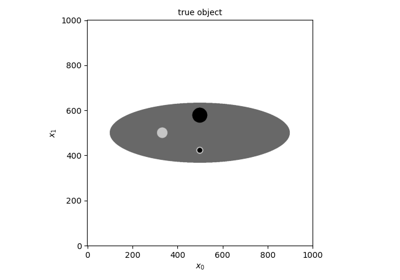

Examples
PET scanner and sinogram geometry examples


High-level PET sinogram projector examples


Non-TOF and TOF projections using a modularized (block) PET scanner geometry
Non-TOF and TOF projections using a modularized (block) PET scanner geometry
High-level PET listmode projector examples


Low-level projection examples


Iterative algorithm examples



2D non-TOF filtered back projection (FBP) of Poisson data
2D non-TOF filtered back projection (FBP) of Poisson data

DePierro’s algorithm to optimize the Poisson logL with quadratic intensity prior
DePierro's algorithm to optimize the Poisson logL with quadratic intensity prior

Iterative listmode algorithm examples


PDHG and LM-SPHG to optimize the Poisson logL and total variation
PDHG and LM-SPHG to optimize the Poisson logL and total variation